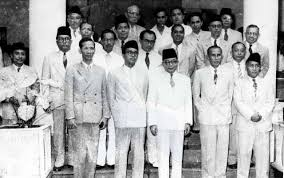

1. Latar Belakang Demokrasi Liberal
Demokrasi Liberal dimulai setelah Indonesia kembali menjadi negara kesatuan pasca pembubaran Republik Indonesia Serikat (RIS) pada tahun 1950. Sistem ini mengadopsi model parlementer, di mana kekuasaan eksekutif berada di bawah kendali parlemen. Latar belakangnya meliputi:
A. Konstitusi Sementara 1950: Mengatur sistem pemerintahan parlementer dengan presiden sebagai kepala negara dan perdana menteri sebagai kepala pemerintahan.
B. Dominasi partai politik: Banyak partai politik bermunculan, mencerminkan keberagaman ideologi.
C. Kondisi pasca-kemerdekaan: Ada keinginan untuk menguatkan demokrasi setelah perjuangan melawan kolonialisme.
Tujuan Demokrasi Liberal
Mewujudkan pemerintahan demokratis berdasarkan perwakilan rakyat.
Mendorong stabilitas politik melalui kerja sama antar partai.
Mengembangkan kehidupan ekonomi, sosial, dan budaya secara modern dan merata.
Menyelesaikan konflik internal dan eksternal, seperti perselisihan wilayah dan upaya pengakuan kedaulatan.
Pelaksanaan dalam berbagai bidang
a. Politik
A. Sistem parlementer menyebabkan sering terjadinya pergantian kabinet (7 kabinet dalam 9 tahun).
B. Dominasi partai-partai besar seperti PNI, Masyumi, NU, dan PKI menyebabkan sulitnya mencapai stabilitas politik.
C. Pemilu 1955 menjadi tonggak penting karena dianggap pemilu pertama yang demokratis.
b. Ekonomi
A. Ekonomi Indonesia masih bergantung pada sektor agraris dan ekspor bahan mentah.
B. Kebijakan ekonomi belum stabil akibat pergantian kabinet yang sering.
C. Program Benteng dan nasionalisasi perusahaan Belanda sempat diupayakan, tetapi hasilnya terbatas.
c. Sosial dan Budaya
A. Muncul kesenjangan sosial antara wilayah Jawa dan luar Jawa.
B. Budaya politik sangat dipengaruhi oleh ideologi partai-partai besar.
C. Kebijakan budaya dan sosial tidak merata karena pergantian kabinet.
d. Pendidikan
A. Pendidikan mulai diperluas, tetapi masih terbatas di kota-kota besar.
B. Perguruan tinggi berkembang, seperti Universitas Indonesia (UI) dan Universitas Gadjah Mada (UGM).
e. Pertahanan dan Keamanan
A. Muncul berbagai pemberontakan, seperti DI/TII, PRRI/Permesta, dan RMS, yang menunjukkan lemahnya integrasi nasional.
B. Upaya mempertahankan wilayah Papua Barat dari Belanda menjadi isu utama.
Hasil / prestasi demokrasi liberal

A. Pemilu 1955 berhasil dilaksanakan dengan tingkat partisipasi tinggi.
B. Terbntuknya Majelis Konstituante untuk menyusun UUD baru.
C. Meningkatnya pendidikan dan pengaruh demokrasi di masyarakat.
D. Indonesia diakui lebih aktif dalam kancah internasional, misalnya melalui Konferensi Asia-Afrika (1955).
Kekurangan dan kelebihan demokrasi Liberal
Kekurangan :
A. Ketidakstabilan politik: Pergantian kabinet yang cepat menghambat keberlanjutan program pemerintahan.
B. Kelemahan ekonomi: Ketergantungan pada sektor agraris dan minimnya investasi di sektor industri.
C. Pemberontakan daerah: Munculnya konflik separatis menunjukkan lemahnya kohesi nasional.
D. Terlalu banyak partai politik: Fragmentasi politik menyulitkan pengambilan keputusan.
kelebihan :
A. Kebebasan politik terjamin: Rakyat memiliki kebebasan memilih dan berpendapat.
B. Pemilu yang demokratis: Pemilu 1955 menjadi prestasi besar dalam sejarah politik Indonesia.
C. Perkembangan intelektual dan pendidikan: Munculnya generasi baru yang lebih terdidik.
Akhir demokrasi liberal
Demokrasi Liberal berakhir pada 5 Juli 1959 setelah Presiden Soekarno mengeluarkan Dekrit Presiden yang:
A. Membubarkan Majelis Konstituante.
B. Mengembalikan UUD 1945 sebagai dasar negara.
C. Membentuk sistem pemerintahan Demokrasi Terpimpin.
Alasan berakhirnya:
A. Ketidakmampuan Demokrasi Liberal menyelesaikan persoalan politik dan ekonomi.
B. Ketidakpuasan Soekarno terhadap sistem multipartai yang dianggap menghambat stabilitas.
C. Keinginan untuk kembali ke sistem pemerintahan yang lebih terpusat.